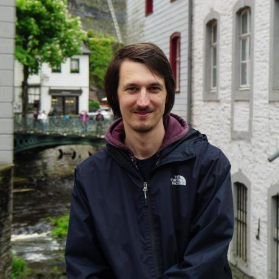

After 10 years in academic research in theoretical computer science, discrete mathematics, and logic, and it was time for me to transition to more applied areas of CS.
I have hands-on experience with formal methods (prove/verify theorems/software/hardware), distributed computing (computing clusters), and software engineering across various programming languages and platforms. Being a passionate Linux user for over 20 years, I have built a solid understanding of concepts across the full stack — from low-level hardware, operating systems, and compilers up to high-level algorithms and mathematical concepts. And I am always excited to explore new technologies like AI, PQC, or privacy-enhancing technologies.